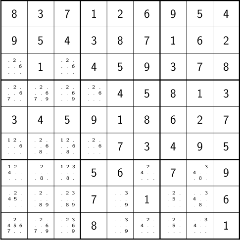
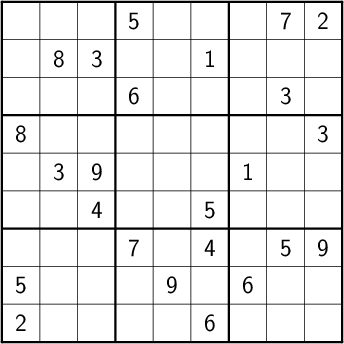

:0:
1 Introduction
Quarantine is in full swing, and after watching a disturbing amount of TV, you plowed through a book of Sudoku puzzles that turned up in the basement. Now they’re gone, and you’re looking for something more. Bigger. Monstrous, you might say. Unfortunately, the giant Sudoku puzzles (think 16×16 or 25×25) are not quite so easy to find in any quantity. It turns out, though, that with a little effort, you can make machines churn them out while you sleep.
In this article we will
- consider the structure of the Sudoku board
- use that structure to capture, in a general way, common heuristics for solving Sudoku puzzles
- employ both constraint propagation and backtracking to create a suitably fast Sudoku solver
- use that solver as building block for generating Sudoku puzzles of any size we might desire
At the end, we’ll have implemented a library for dealing with Sudoku, as well as a small collection of command line tools for generating, solving, and formatting puzzles.
2 The Board
2.1 Board Divisions
The Sudoku board consists of a 9x9 grid of cells, with a 3x3 grid of boxes, each containing a 3x3 grid of cells, overlaid:

where the cells have been numbered in row-major order. Each cell is a member of a set of three divisions, namely
- rows:

where \(\mathit{row} = \lfloor\mathit{cell}/9\rfloor\)
- columns:
where \(\mathit{col} = \mathit{cell}\bmod 9\)
- boxes:
where \(\mathit{box}(\mathit{cell}) = 3\times\lfloor\mathit{row}(cell)/3\rfloor + \mathit{col}(\mathit{cell})/3\).
Of these, the most interesting division of the board is into boxes. A Sudoku board can be viewed as a \(3\times 3\) grid of boxes, each a \(3\times 3\) grid of cells, resulting in a grid of \(3^4\) cells arranged into \(3^2\) rows and \(3^2\) columns, for a grand total of \(3\times3^2\) distinct divisions. Furthermore, when the board is complete, each cell will contain a number from 1 to 9 (or \(3^2\)) inclusive. Every interesting dimension of the board is describable in terms of power of 3, which we can think of as the order of a board. We can now think of Sudoku (or Sudoku-like) boards a bit more generally. Given a board of order \(\omega\), for any \(\mathit{cell}\in [1,\omega^4]\), we can find the row number as
\[\mathit{row}(\mathit{cell}) = \left\lfloor\frac{\mathit{cell}}{\omega^2}\right\rfloor,\]
the column number as
\[\mathit{col}(\mathit{cell}) = \mathit{cell}\bmod \omega^2,\]
and the box number as
\[\mathit{box}(\mathit{cell}) = \omega\times\left\lfloor\frac{\mathit{row}(cell)}{\omega}\right\rfloor + \left\lfloor\frac{\mathit{col}(\mathit{cell})}{\omega}\right\rfloor.\]
This generalization allows us to handle larger boards with ease. For simplicity, the discussion and examples below will center on conventional order 3 boards, unless otherwise specified; even so, the principles remain the same for other orders.
If we sequentially number divisions in the following manner:
| division | start | end |
|---|---|---|
| rows | 0 | \(\omega^2 - 1\) |
| columns | \(\omega^2\) | \(2\omega^2 - 1\) |
| boxes | \(2\omega^2\) | \(3\omega^2 - 1\) |
then we can write a function to compute a mapping from cells to divisions, as well as an inverse mapping from divisions to cells:
⟨functions⟩ ≡ ↓def board_divs(order): ''' generates a dictionary (cell2divs) mapping cells to their various divisions in boards of the given order. Also generates a complementary mapping, div2cells. Returns (cell2divs, div2cells). ''' n = order**2 box = lambda i, j: i//order * order + j//order cell2divs = dict(enumerate((i, n + j, 2*n + box(i, j)) for i in range(n) for j in range(n))) return cell2divs, transpose(cell2divs)
where
def transpose(m): ''' given a binary matrix represented as a dictionary whose values are sets, and where a 1 at (i,j) is indicated by j in m[i] return the transpose of m. ''' t = {} for i, js in m.items(): for j in js: t.setdefault(j, set()).add(i) return t
In addition to allowing us to more concisely formulate algorithms operating on Sudoku boards, operating in terms of cells and divisions opens the door to adapting the program we develop here to Sudoku variants featuring irregularly-shaped divisions (like squiggly Sudoku).
2.2 Logical Representation
Our Sudoku solver will need a convenient representation of the board state at any given time, as well as a ways to sensibly change that state. For that, we’ll define a simple class:
⟨data types⟩ ≡class board: 'Utility class for representing and tracking board state.' ⟨board initialization⟩ ⟨cell marking⟩ ⟨copying⟩
Each cell is either known or unknown. For the known cells, we need only track their values. For the unknown cells, however, we need to either track or compute the values that they may possibly take. Since the requirements for the two cell classes are different, we handle them separately.
⟨board initialization⟩ ≡def __init__(self, known, unknown, cell2divs, div2cells): ''' known dictionary mapping known cells to their respective values unknown dictionary mapping unknown cells to sets of possible values cell2divs, div2cells complementary mappings describing the board structure, such as those produced by board_divs ''' assert not set(known) & set(unknown) self.known = known self.unknown = unknown self.cell2divs = cell2divs self.div2cells = div2cells
Solving a Sudoku involves repeatedly marking the board until no empty cells remain, subject to the constraint that each division contains one each of the numbers from 1 to 9 inclusive. With each marking, we assert knowledge about a previously unknown cell, and the possible values that can be taken by unknown cells sharing a division become more constrained. To track this,
⟨cell marking⟩ ≡ ↓def mark(self, cell, val): 'set cell to val, updating unknowns as necessary' self.known[cell] = val self.unknown.pop(cell, None) for div in self.cell2divs[cell]: for cell2 in self.div2cells[div]: self.elim(cell2, val) def elim(self, cell, val): "remove val from cell's possibilities" self.unknown.get(cell, set()).discard(val)
This is the basic mechanism of constraint propagation that ultimately allows us to develop usefully fast solution techniques. For brevity, whenever we speak of marking a cell, we’ll assume that the possibilities for other cells are updated as necessary, too.
Sometimes we may not know that a given marking will work out—perhaps we’re guessing—so we should support marking cells speculatively and recovering when we realize how wrong we are. The simplest method is to mark a copy of the current board state:
⟨cell marking⟩ +≡ ↑def marked(self, cell, val): 'returns a new board, with cell marked as val and possibilities eliminated' new = self.copy() new.mark(cell, val) return new
⟨imports⟩ ≡ ↓import copy
⟨copying⟩ ≡def copy(self): 'copies board' return self.__class__(copy.deepcopy(self.known), copy.deepcopy(self.unknown), self.cell2divs, self.div2cells)
2.3 Textual Representation
Our finished program must accept a textual board representation as input, and it must emit a textual representation of the completed board as output. Also, any supported format must be flexible enough to handle Sudoku boards of any order.
2.3.1 Converting from Strings
We’ll impose the following requirements on strings that represent Sudoku boards of any order \(\omega\):
- Each cell will be represented by an integer (if known) or a ’.’ (if unknown).
- The number of cells must be \(\omega^4\), where \(\omega\) is some integer.
- Cells can be separated by any other character.
- Values for known cells must be in \([1, \omega^2]\).
These rules will allow us to handle
1 3 | . . . . | 3 1 ----+---- 3 1 | . . . 2 | 1 3
as easily as
1 3 . . . . 3 1 3 1 . . . 2 1 3
or
1 3 . . . . 3 1 3 1 . . . 2 1 3
They also allow us to compute the order directly from the number of cells.
def load_board(s, validate_vals=True): ''' given a string representing a board, returns a board object. For a board of a given order: - Order is computed as the fourth root of board length, and it must be an integer. - Each cell must be represented by an integer in [1, order**2] inclusive, or `.' to denote unknown cells. This check can be disabled by setting validate_vals to False. - Cells must be separated from each other by any sequences of characters in /[^0-9.]+/. On failure, raises ValueError. ''' vals = [cell for cell in ''.join(c if c in '0123456789.' else ' ' for c in s).strip().split() if cell.isdigit() or cell == '.'] order = int(len(vals) ** 0.25) n = order**2 if len(vals) != order**4: raise ValueError bd = blank(order) for (cell, val_) in enumerate(vals): if val_ == '.': continue val = int(val_) if validate_vals and (val < 1 or val > n): raise ValueError bd.mark(cell, val) return bd
where
2.3.2 Converting to Strings
Once we’ve solved a puzzle or otherwise modified a board, we’d like to get a
readable representation back out. Given that there are further use cases for a
completed Sudoku board, like deriving Sudoku puzzles of varying difficulty, it
should be loadable via load_board, like:
8 3 7 | 1 2 6 | 9 5 4 9 5 4 | 3 8 7 | 1 6 2 2 1 6 | 4 5 9 | 3 7 8 ------+-------+------ 7 . 9 | . 4 5 | 8 1 3 3 4 5 | 9 1 8 | 6 2 7 1 . 8 | . 7 3 | 4 9 5 ------+-------+------ 4 8 1 | 5 6 2 | 7 . 9 5 9 3 | 7 . 1 | 2 8 6 6 7 2 | 8 9 4 | 5 3 1
def dump_board(bd): 'returns a "pretty printed" string representation of board bd' order = int((len(bd.known) + len(bd.unknown)) ** 0.25) n = order**2 svals = [str(bd.known[i] if i in bd.known else '.') for i in range(n**2)] width = max(map(len, svals)) fmt = lambda cell: ('%%%ds' % width) % cell n_x_n = [svals[i*n : i*n + n] for i in range(n)] cols_grpd = [' | '.join(' '.join(map(fmt, row[j*order : j*order + order])) for j in range(order)) for row in n_x_n] rows_grpd = ['\n'.join(cols_grpd[i*order : i*order + order]) for i in range(order)] rule = '\n' + ''.join('+' if c == '|' else '-' for c in cols_grpd[0]) + '\n' return rule.join(rows_grpd)
3 Solving Sudoku
Having a suitable representation of the board state, we can now work out how to
solve a Sudoku puzzle. All of the techniques discussed here rely on the
constraint propagation that board.mark performs automatically.
3.1 Forced Moves
Consider how a human might approach a grid like
3.1.1 Single-Candidate
Let’s immediately reject the idea of blindly trying numbers until something works. Instead, let’s annotate the board with the remaining possibilities for each unknown cell, revealing our true situation:
The cell indicated with a red box can only take on a value of 2; if we mark it as such, then we have to remove 2 from the possibilities for the remaining cells that share a row, column, or box (the cells to be modified are indicated with red digits).
The process can be expressed as
def mark_single_vals(bd): 'applies the "single candidate" (a.k.a. "naked single") rule' marked = False for (cell, vals) in list(bd.unknown.items()): if len(vals) == 1: bd.mark(cell, set(vals).pop()) marked = True return marked
Marking the cell with a 2 gives us
We now have a cell that can only Continuing in this fashion a few more yields

3.1.2 Single Cell
While none of the unknown cells has only one possible value, there are two cells that each can only hold a 5. Marking and eliminating, we have:
def mark_single_cells(bd): 'applies the "hidden single" rule' marked = False for div, cells in bd.div2cells.items(): spots = transpose({cell: bd.unknown.get(cell, set()) for cell in cells}) for v, cs in spots.items(): if len(cs) == 1: cell = cs.pop() if v in bd.unknown.get(cell, set()): bd.mark(cell, v) marked = True return marked
We can continue applying these two heuristics, favoring the simpler whenever possible,
def mark_forced(bd): ''' iteratively applies single candidate and hidden single rules until no further modifications are possible ''' fns = (mark_single_vals, mark_single_cells) while any(fn(bd) for fn in fns): pass
until we reach

which will not yield to either. At this point, we have a couple options:
- We can crack open any number of guides on Sudoku to find other strategies that might apply.
- We can guess at the next play.
3.2 Searching
Rather than further accumulating strategies, eventually turning our solver into a corpus of Sudoku-solving lore, let’s do what the inexperienced and the impatient do when faced with such a board: Let’s guess. Once we’ve made our guess, we’ll play it out, using our two rules for detecting forced assignments whenever we can, and guessing again as necessary. If it becomes clear that our guess is wrong, we’ll come back to this board state and try something else. In short, we’ll perform a depth-first search through the space of Sudoku boards.
To decide how we’ll guess, let’s consider what happens if we choose poorly:
- We’ll find ourselves back at our current board state, choosing a different cell/value assignment to try.
- We’ll have eliminated the cell/value combination we just tried as being valid for any board state derived from our current state.
So, if an incorrect guess allows us to prune part of the search space, we should structure our guessing so that each incorrect choice prunes as large a subtree as possible. The simplest thing we can do, then, is to find the cell with the fewest possible values and then try each of the possibilities until we’re successful. So, choosing the red-boxed cell in

we can choose either a 2 or a 6. If the solution is ultimately derived from our current board state, then one of these values must be correct, giving a 50% chance of guessing correctly the first time. Should we exhaust both numbers without finding a solution, then there is no solution to be had from our current state–either the game is unsolvable or we previously made a mistake.
For most Sudoku boards the author has tested, there does not seem any decisive advantage to preferring one ordering of the possible values over another. By randomizing the order in which possibilities are tried, combined with randomly selecting from the cells meeting our fewest possibilities criterion, we can use our solver, fed with a blank board, as a building block for a Sudoku puzzle generator. Also, there are times when we want to restrict the number of guesses made on the way to a solution, e.g., when testing potential clues while generating a puzzle.
The overall solution procedure, incorporating both backtracking and constraint
propagation, generates all solutions for a given board that can be found in
maxdepth guesses.
def solve(bd, maxdepth=inf): 'given a board bd, generates all solutions in maxdepth guesses' def _solve(bd, depth=0): mark_forced(bd) if issolved(bd): yield bd elif depth < maxdepth: _, _, cell, vals = min((len(vals), random.random(), cell, vals) for (cell, vals) in bd.unknown.items()) for val in random.sample(vals, len(vals)): yield from _solve(bd.marked(cell, val), depth=depth+1) return _solve(bd.copy())
where
def issolved(bd): 'returns True when no unknown cells remain. Assumes the board is valid.' return not bd.unknown
We should also
Now, we can generate the final solution to our original puzzle:
next(solve(load_board(''' 8 3 . | . . . | . . 4 9 . . | . . . | . 6 . . 1 . | 4 5 . | . 7 . ------+-------+------ . . . | . . 5 | . . 3 . . 5 | . 1 8 | . . . . . . | . . 3 | 4 9 . ------+-------+------ . . . | . 6 . | 7 . . . . . | . . 1 | . . . . . . | 8 . . | . . 1 ''')))
yields
4 Generating Sudoku
To generate a puzzle, we’ll work backwards from the solution, iteratively testing each cell to determine whether the board remains proper—i.e., has exactly one solutions—if the cell is made an unknown. Those that can be masked out are; those that can’t become the clues. A naive first version would look something like
def generate_from(soln): known = soln.known.copy() order = int(len(known) ** 0.25) clues = {} def new(): bd = blank(order) for (cell, val) in known.items(): bd.mark(cell, val) for (cell, val) in clues.items(): bd.mark(cell, val) return bd while known: cell = random.choice(list(known)) val = known.pop(cell) if not isproper(new()): clues[cell] = val return new()
where
def isproper(bd): nsolns = 0 for soln in solve(bd): nsolns += 1 if nsolns > 1: break return nsolns == 1
However, the naive procedure’s performance degrades rapidly with increasing
order—checking a board’s propriety requires solving it, and solve’s
complexity grows combinatorially with the number of unknown cells. We can
salvage the situation with a few measures:
- We can safely mask out any cell that can be deduced based on the currently known cells.
- Checking whether masking out a given cell would result in proper board
requires attempting to solve the board resulting from masking the cell. We
can constrain the solver to only generate solutions within
maxdepthguesses. - The solver chooses from the unknown cells with the fewest possible
values. If set, the
minruleoption causes us to check whether a potential clue cell would be among those the backtracker would consider.
The generation procedure we’ll actually use is
def generate_from(soln, minrule=False, maxdepth=inf): 'given a solution, generate a puzzle (like Jeopardy!)' known = soln.known.copy() order = int(len(known) ** 0.25) clues = {} def new(): bd = blank(order) for (cell, val) in known.items(): bd.mark(cell, val) for (cell, val) in clues.items(): bd.mark(cell, val) return bd minvals = lambda bd: min(map(len, bd.unknown.values())) while known: cell = random.choice(list(known)) val = known.pop(cell) bd2 = new() mark_forced(bd2) if cell in bd2.known: pass elif minrule and len(bd2.unknown[cell]) > minvals(bd2): clues[cell] = val elif not isproper(bd2, maxdepth=maxdepth): clues[cell] = val return new()
where
def isproper(bd, maxdepth=inf): nsolns = 0 for soln in solve(bd, maxdepth): nsolns += 1 if nsolns > 1: break return nsolns == 1
We can now create puzzles of various sizes; for example, order 2:

order 3:

and order 4:

Once we’ve made a puzzle, we might like some idea of how difficult it is. There are many ways to go about this—keeping track of which of a stable of heuristics are needed, how many guesses are needed, etc.—but the one we’ll use here is based on how much of the puzzle our solver can complete before it has to resort to guessing.
5 Utility Library
Since much of what we’ve written so far is useful for multiple purposes, we’ll package it into a library:
⟨sudoku/__init__.py⟩ ≡'useful utilities for manipulating Sudoku puzzles' ⟨imports⟩ ⟨data types⟩ ⟨functions⟩
The finished product is ./sudoku/__init__.py.
6 Command Line Tools
Having a library encapsulating the bulk of what we might wish to do, let’s make it more operationally useful by creating a series of tools that we can use from a command line or shell script. Each tool should emit a usage message if requested, and each should die gracefully on error.
⟨common⟩ ≡def usage(): return __doc__.lstrip() % sys.argv[0] if __name__ == '__main__': try: if set(sys.argv) & {'-h', '--help'}: sys.exit(usage()) else: main(sys.argv[1:]) except Exception as e: sys.exit('Unhandled %s' % e)
6.1 The Solver
For simplicity, the solver should read a board, parsable by load_board,
from either a file or standard input, and emit all the solutions to standard
output. The overall structure of our file should look something like:
⟨bin/sudoku⟩ ≡⟨solver usage⟩ ⟨solver imports⟩ ⟨solver functions⟩ ⟨common⟩
where
⟨solver imports⟩ ≡import sys import sudoku as sd
⟨solver functions⟩ ≡def main(argv): fn = argv[0] if argv else '-' try: bd = sd.load_board((sys.stdin if fn == '-' else open(fn)).read()) except ValueError: sys.exit('ill-formed board') for (i, soln) in enumerate(sd.solve(bd), start=1): assert sd.isvalid(soln) and sd.issolved(soln) print('solution %s:' % i) print(sd.dump_board(soln)) print()
and
def isvalid(bd): if not bd.known and not bd.unknown: return False for (div, cells) in bd.div2cells.items(): vals = [bd.known[cell] for cell in cells if cell in bd.known] if len(vals) != len(set(vals)): return False elif any(bd.unknown.get(cell, set()) & set(vals) for cell in cells): return False return True
We should also have a civilized help message:
⟨solver usage⟩ ≡''' Usage: %s [FILE] Find all solutions for a Sudoku puzzle. Options: -h, --help print this help and exit If FILE is omitted or `-', then the initial board is read from stdin. The input board should consist of a series of cells, each either a positive integer or a `.' to denote an unknown value, separated by any characters not in /[0-9.]/. The order of the board is automatically detected as the fourth root of the number of cells, and it must be an integer. The numerical values are constrained from 1 to order**2 inclusive. The solutions will always be ``pretty-printed'', e.g., solution 1: 4 2 7 | 1 3 6 | 5 8 9 6 5 1 | 9 2 8 | 4 7 3 3 8 9 | 5 4 7 | 1 6 2 ------+-------+------ 2 3 5 | 8 1 9 | 7 4 6 9 6 8 | 3 7 4 | 2 1 5 7 1 4 | 2 6 5 | 9 3 8 ------+-------+------ 8 9 6 | 7 5 1 | 3 2 4 1 4 3 | 6 9 2 | 8 5 7 5 7 2 | 4 8 3 | 6 9 1 solution 2: ... It is the case that a ``proper'' Sudoku can have only one solution; however, ``improper'' Sudoku puzzles do exist. '''
to give our finished Sudoku solver.
6.2 The Generator
The puzzle generator need only take a board order from the command line, defaulting to 3, for a standard Sudoku. For convenience, we’ll have it spit out the solution and a difficulty estimate, too.
⟨bin/sudokugen⟩ ≡''' Usage: %s [-o ORDER] [-g MAXGUESSES] [-m] Generate a Sudoku puzzle. Options: -h, --help print this help and exit -g MAXGUESSES when testing potential clues, restrict solver to a depth of MAXGUESSES -m only remove cells that can be deduced or have that might be among the best candidates ''' import getopt from math import inf import sys import sudoku as sd def main(argv): opts_, args = getopt.gnu_getopt(argv, 'g:mo:') opts = dict(opts_) order = int(opts.get('-o', 3)) maxguesses = int(opts['-g']) if '-g' in opts else inf minrule = '-m' in opts recursionlimit = sys.getrecursionlimit() sys.setrecursionlimit(order**4 * 2) soln = next(sd.solve(sd.blank(order))) sys.setrecursionlimit(recursionlimit) bd = sd.generate_from(soln, minrule=minrule, maxdepth=maxguesses) print('difficulty:', sd.rate(bd)) print() print(sd.dump_board(bd)) print() print('> ' + sd.dump_board(soln).replace('\n', '\n> ')) ⟨common⟩
6.3 The Formatter
Having the means to both generate and solve Sudoku puzzles, the next thing is to nicely present them. For flexibility, we’ll generate Latex source code for inclusion into any document we please, allowing us to generate figures (like the ones in this article), booklets, etc. Additionally, we’ll lean on the facilities of a custom Latex package.
6.3.1 Conversion to Latex
The Latex environment we’ll use expects as input something like
\begin{sudoku}[2] |1|2|3|4|. |1|2|3|4|. |1|2|3|4|. |1|2|3|4|. \end{sudoku}
The individual cells can contain more complex items than numbers, provided they’re suitably wrapped.
Generating the sudoku environment falls to
⟨formatter functions⟩ ≡ ↓def sudoku_env(bd, pencil_marks, special): ncells = len(bd.known) + len(bd.unknown) order = int(ncells**0.25) n = order**2 cells = [str(bd.known.get(i, ' ')) for i in range(ncells)] if pencil_marks: apply_pencils(bd, cells, order) reds = set() redboxes = set() for cell in special: dr, drb = highlight(cell, bd, cells, order) reds |= dr redboxes |= drb cells_fmtd = fmt_cells(cells, bd, reds, redboxes) grid = form_body(cells_fmtd, n) sudokusize = n/9 * (17 if pencil_marks or redboxes else 12) unitlength = sudokusize / n fboxsep = {2: 2, 3: 7, 4: 9}.get(order, 9) / 4 / n return f''' \\setlength\\sudokusize{{{sudokusize}cm}} \\setlength\\unitlength{{{1/n}\\sudokusize}} \\setlength\\fboxsep{{-{fboxsep}\\unitlength}} \\renewcommand\\sudokuformat[1]{{\\Huge\\sffamily#1}} \\begin{{sudoku}}[{order}] {grid} \\end{{sudoku}} ''' def form_body(cells, n): rows = [cells[i*n : (i + 1) * n] for i in range(n)] lines = ['|%s|.' % '|'.join(row) for row in rows] return '\n'.join(lines)
The calculations for sudokusize and fboxsep are the product of considerable
trial and error to determine what would look decent/reasonable/not terrible over
a range of board sizes.
Pencil marks should be formed in a square array containing just the values of interest and little else. In practice, we have to add some blank rows and columns to give more favorable placement in the cells.
⟨formatter functions⟩ +≡ ↑↓def pencils(possible, order): vals = [str(val) if val in possible else '.' for val in range(1, 1 + order**2)] coldesc = 'c' + 'c' * order grid = ' \\\\\n'.join(' & '.join(map(str, ['\\ \\ '] + vals[order*i : order*(i + 1)])) for i in range(order)) return f''' \\resizebox{{\\unitlength}}{{.6\\unitlength}}{{ \\begin{{tabular}}{{{coldesc}}} \\ \\\\ {grid} \\\\ \\ \\\\ \\end{{tabular}} }} ''' def apply_pencils(bd, cells, order): for (unk, vals) in bd.unknown.items(): cells[unk] = pencils(vals, order)
We wish to call out cells of interest, and we also want to indicate how constraints might propagate:
⟨formatter functions⟩ +≡ ↑↓def highlight(cell0, bd, cells, order): reds = set() redboxes = {cell0} for div in bd.cell2divs[cell0]: for cell in bd.div2cells[div] - set(bd.known): cells[cell] = pencils(bd.unknown[cell], order) if bd.unknown[cell0] & bd.unknown[cell]: reds.add(cell) return reds, redboxes
Once the pencil marks and highlights have been computed, we can format each cell to show pencil marks, highlighted cells, and the possible effects of constraint propagation:
⟨formatter functions⟩ +≡ ↑↓def fmt_cells(cells, bd, reds, redboxes): red = lambda s: '{\\color{red}%s}' % s redboxed = lambda s: '{\\color{red}\\fbox{%s}}' % s black = lambda s: '{\\color{black}%s}' % s return [redboxed(cell) if i in redboxes else red(cell) if i in reds else black(cell) for (i, cell) in enumerate(cells)]
With the formatting machinery out of the way, main becomes quite simple:
⟨formatter imports⟩ ≡import getopt import sys import sudoku as sd
⟨formatter functions⟩ +≡ ↑def main(argv): try: opts_, args = getopt.gnu_getopt(argv, 'hp') special = {int(cell) for cell in args} except getopt.GetoptError: sys.exit(usage()) except ValueError: sys.exit(usage()) opts = dict(opts_) pencil_marks = '-p' in opts try: bd = sd.load_board(sys.stdin.read(), validate_vals=False) except ValueError: sys.exit('ill-formed board') print(sudoku_env(bd, pencil_marks, special))
Since we’re not attempting to generate solutions, it is not critical that input
boards be restricted in their cell values. Setting validate_vals is False
facilitates producing diagrams.
We can now collect the pieces into a single file, like so:
⟨bin/sudoku2tex⟩ ≡⟨formatter usage⟩ ⟨formatter imports⟩ ⟨formatter functions⟩ ⟨common⟩
where the usage statement is
⟨formatter usage⟩ ≡''' Usage: %s [OPTIONS] [HIGHLIGHT]... Given a Sudoku board, generate Latex source code. Options: x -h, --help print this help and exit -p print pencil marks for all unknown cells Cells are numbered sequentially from 0 in row-major order. Each HIGHLIGHT indicates a cell whose value (or pencil marks) will have its value surrounded by a red box; HIGHLIGHTs and any cell sharing a possible value with a HIGHLIGHT will have their possibilities set in red. In the absence of the -p option, only cells sharing a division with a HIGHLIGHT will be pencil marked. The code generated by this program requires the sudokuii Latex package, included in the distribution (sudokuii.sty). '''
6.3.2 The Latex Package
Latex has had for years a package for formatting Sudoku boards, but it
focuses purely on the classic 9x9 grid. To get around this, we can create a
package of our own that redefines the sudoku environment to deal with
boards of any order.
⟨latex sudoku definitions⟩ ≡ ↓\renewenvironment{sudoku}[1][3]{ \newcount\order \order = #1 \newcount\n \n = \numexpr(#1*#1) \FPeval{\sudodelta}{1/#1/#1} \renewenvironment{sudoku-block}{ \catcode`\|=\active \@sudoku@activate \setcounter{@sudoku@col}{-1} \setcounter{@sudoku@row}{\numexpr(\n-1)} \setlength\unitlength{\sudodelta\sudokusize} \begin{picture}(\n,\n) \@sudoku@grid\@sudoku@grab@arguments }{ \end{picture} } \renewcommand*\@sudoku@grid{ \linethickness{\sudokuthinline} \multiput(0,0)(1,0){\numexpr(\n+1)}{\line(0,1){\n}} \multiput(0,0)(0,1){\numexpr(\n+1)}{\line(1,0){\n}} \linethickness{\sudokuthickline} \multiput(0,0)(\order,0){\numexpr(\order+1)}{\line(0,1){\n}} \multiput(0,0)(0,\order){\numexpr(\order+1)}{\line(1,0){\n}} \linethickness{0.5\sudokuthickline} \put(0,0){\framebox(0,0){}} \put(\n,0){\framebox(0,0){}} \put(0,\n){\framebox(0,0){}} \put(\n,\n){\framebox(0,0){}}} \begin{center} \begin{sudoku-block} }{ \end{sudoku-block} \end{center} }
The original \@sudoku@grab@arguments also presumes too much about its
input, which becomes a problem for boards of order 2.
\def\@sudoku@grab@arguments#1.{ \scantokens{#1.}}
Now we can assemble these with a bit of boilerplate and dependency information to form the finished Latex package
⟨latex/sudokuii.sty⟩ ≡\NeedsTeXFormat{LaTeX2e}[1999/12/01] \ProvidesPackage{sudokuii}[2020/04/18 Big Sudoku] \RequirePackage{sudoku} \RequirePackage{fp} ⟨latex sudoku definitions⟩ \endinput
6.3.3 Converting Boards to Images
We can streamline board formatting a bit more. The output of sudoku2tex
is meant to be combined with sudokuii.sty in a Latex document, which would
then be converted to some convenient format. Let’s assume that that format
will be transparent PNG. To pull this off gracefully, we’ll start by
wrapping the invocation of pdflatex into something we can use in a
pipeline:
⟨image converter functions⟩ ≡ ↓function pipetex() { d=`mktemp -d` pushd $d >/dev/null { cat <<'EOF' > sudokuii.sty ⟨latex/sudokuii.sty⟩ EOF pdflatex --jobname tmp >/dev/null [[ -f tmp.pdf ]] && cat tmp.pdf } popd > /dev/null rm -rf $d }
Including the contents of sudokuii.sty in this way saves us from having to
fiddle with TeX’s search path.
With pipetex defined, we can express conversion of the Latex for a single
board:
function topng() { convert - -trim -transparent white -colorspace RGB png:-; } function tex2png() { cat <<EOF | pipetex | topng \documentclass[border=2pt,varwidth=\maxdimen]{standalone} \usepackage{graphics} \usepackage{sudokuii} \usepackage{xcolor} \usepackage{tcolorbox} \begin{document} \begin{varwidth}{\linewidth} \huge $(cat) \end{varwidth} \end{document} EOF }
which then becomes a building block for the functionality we ultimately care about:
function convert_puzzle() { infile=$1 outd=$2 shift 2 mkdir -p $outd grep difficulty $infile > $outd/meta.txt grep \> $infile | sudoku2tex "$@" | tex2png > $outd/solved.png grep -v \> $infile | sudoku2tex "$@" | tex2png > $outd/new.png grep -v \> $infile | sudoku2tex -p "$@" | tex2png > $outd/penciled.png } function convert_board() { sudoku2tex "$@" | tex2png }
Once we deal with the command line arguments
⟨handle image converter arguments⟩ ≡while [[ "$1" ]]; do case "$1" in -h|--help) usage exit 0 ;; -P) shift outd="$1" problem=1 if ! [[ "$outd" ]]; then usage exit 1 fi ;; --) break ;; ,*) echo $1 usage exit 1 ;; esac shift done
we can get on with dispatching to the proper conversion routine:
⟨bin/sudoku2img⟩ ≡⟨image converter functions⟩ ⟨handle image converter arguments⟩ tmpfile=`mktemp` cat > $tmpfile err=0 if [[ "$problem" ]]; then convert_puzzle $tmpfile $outd "$@" elif grep -q difficulty $tmpfile; then echo 'sudokugen output detected; re-run with -P option.' >&2 err=1 else <$tmpfile convert_board "$@" fi rm -f $tmpfile exit $err
The usage statement:
function usage() { cat <<EOF Usage: `basename $0` [OPTIONS] Generate images from Sudoku boards or puzzles (i.e., paired boards and solutions, as produced by sudokugen). Options -h, --help print this help and exit -P OUTDIR generate images for a puzzle. Expected input is of the form produced by sudokugen. At conclusion, OUTDIR will contain: - new.png the unsolved board - solved.png the completed board - penciled.png the unsolved board with pencil marks applied - meta.txt any additional metadata, like the difficulty -- indicates the end of options for `basename $0`; any remaining arguments will be passed to sudoku2tex Input is taken from STDIN. EOF }
At this point, generating a large Sudoku is as simple as
sudokugen -o 5 -m -g2 | sudoku2img -P foo
Now we have something to occupy a good bit of time:
And, when we finally give up, here’s the solution:

7 Putting It All Together
There’s just one more item to make this into a usable package.
⟨setup.py⟩ ≡import os from setuptools import setup, find_packages def ls(base): return [os.path.join(base, fn) for fn in os.listdir(base)] setup(name='sudoku', version='0.1', description='Sudoku', packages=find_packages(), scripts=ls('bin'), include_package_data=True, zip_safe=False)